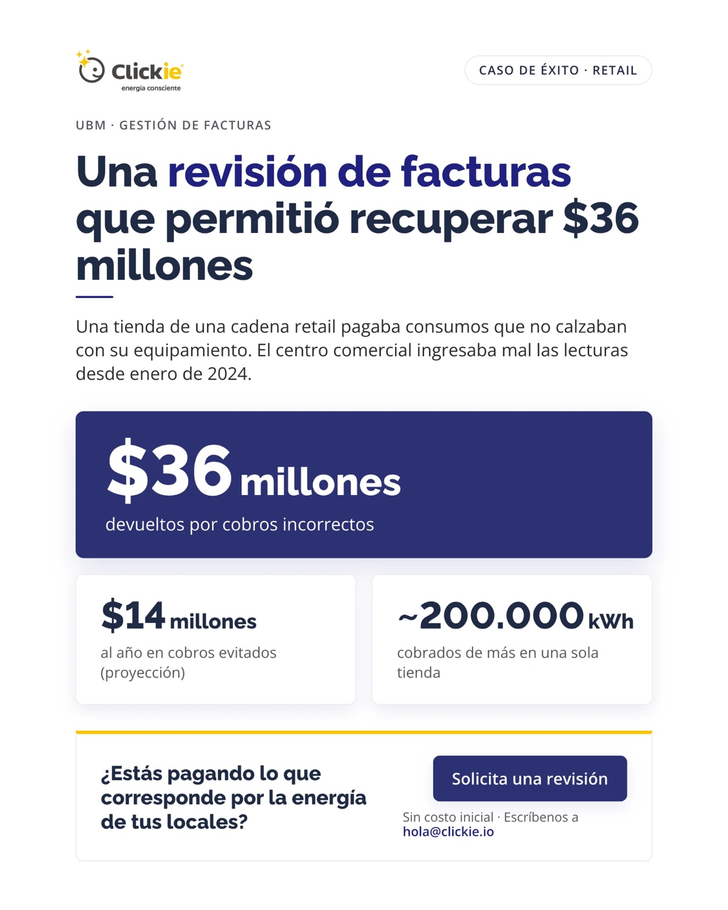

El problema: una tienda que consumía más de lo que podía
Al revisar las facturas de una cadena retail, una tienda llamó la atención. Su consumo facturado no calzaba con su equipamiento, ni con el de otros locales similares de la misma cadena.
En una cadena con decenas de locales, una diferencia así es fácil de pasar por alto. Cada factura llega por separado, se paga y se archiva. Nadie las mira todas juntas.
Lo que encontramos
Comparamos las facturas de la tienda con las de sus pares y luego hicimos mediciones en terreno. Los datos confirmaron la sospecha: el centro comercial estaba ingresando mal las lecturas del medidor desde enero de 2024.
Documentamos los hallazgos en una auditoría y gestionamos con el mall la verificación y la corrección de la facturación.
El resultado
- $36 millones devueltos por cobros incorrectos.
- $14 millones al año en cobros que se evitarán, según la proyección tras corregir la facturación.
- Casi 200.000 kWh cobrados de más en una sola tienda.
Qué significa para tu empresa
- Si estás en Finanzas: los errores de facturación son plata que se puede recuperar. Con una revisión periódica, cada cobro indebido se detecta y se gestiona su devolución, y el gasto llega ordenado al cierre de mes.
- Si estás en Operaciones: comparar locales similares es la forma más rápida de encontrar el que se sale de la norma. A veces el problema está en un equipo; otras, como aquí, en la factura.
- Si estás en Sostenibilidad: una lectura mal ingresada también infla tu dato de consumo. Para medir y fijar metas, primero necesitas datos que reflejen lo que de verdad usas.
Cómo lo hacemos
Con UBM, nuestra gestión de facturas, digitalizamos tus facturas de energía, agua y gas, las analizamos y comparamos tus locales entre sí. Cuando encontramos un cobro que no corresponde, lo gestionamos por ti con la distribuidora o el centro comercial. Un Experto Clickie te acompaña en cada etapa.
¿Estás pagando lo que corresponde?
Solicita una revisión de tu facturación
Conoce UBM, nuestra gestión de facturas
